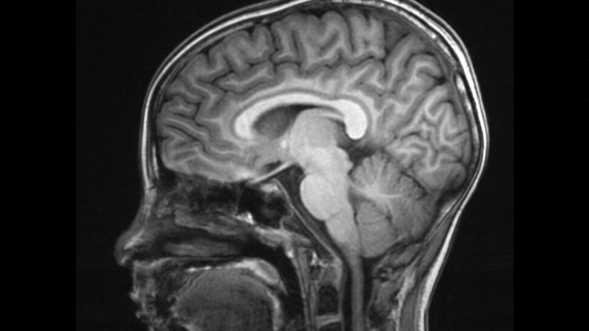

La leucopathie signifie littéralement maladie de la substance blanche. Elle indique une atteinte au niveau du système neurologique, causant ainsi de multiples maladies cérébrales. Il est judicieux de bien définir la leucoencéphalopathie, de connaitre les causes et les symptômes de cette maladie ainsi que les moyens pour la soigner.
Définition de la leucopathie vasculaire
Étymologiquement, le mot leucopathie tire son origine des mots grecs "leuco" qui signifie blanc et "pathos" dont la traduction est maladie. Une leucoencéphalopathie ou leucopathie est une atteinte neurologique due à une altération de la substance blanche du cerveau, quelque soit la cause de la lésion. Si le cortex cérébral et le stockage des informations sont souvent cités, la substance blanche est moins connue du grand public.
Qu'est-ce que la substance blanche dans le cerveau ?
Elle est composée de fibres nerveuses, les axones, prolongement des neurones et entourés d’une substance grasse blanche nommée myéline. Le rôle de la substance blanche est d'assurer la transmission de l'influx nerveux dans le système nerveux. Il semble toutefois qu’elle soit impliquée dans d’autres processus.
Les leucoencéphalopathies
Les leucoencéphalopathies peuvent être primaires ou héréditaires (d’origine génétique), mais elles sont le plus souvent secondaires (acquises). De nombreuses maladies neurologiques sont des leucopathies plus ou moins sévères.
Parmi les différents types de leucoencéphalopathies acquises, se distinguent les leucopathies d'origine vasculaire dues à des troubles de la microvascularisation du cerveau (artérioles et capillaires) à l'origine d'une souffrance au niveau de la substance blanche.
Est-ce que la leucopathie vasculaire est une atteinte grave ?
La littérature médicale et scientifique est prolifique sur la leucopathie vasculaire et sa relation avec le vieillissement vasculaire cérébral et le risque de récurrence d’AVC ischémiques.
Toutefois, elle ne serait pas de mauvais pronostic pour un premier épisode d'ischémie cérébrale.
La leucoencéphalopatie : étiologies (ses causes)
Les leucopathies d'origine vasculaire font partie des leucopathies les plus fréquentes.
Elles sont souvent la traduction d’une microangiopathie cérébrale qui regroupe les différentes altérations des artérioles, des capillaires et des veinules du cerveau. L’artériolosclérose et l’angiopathie cérébrale amyloïde sont les deux étiologies les plus fréquentes qui aboutissent à la microangiopathie cérébrale.
L’âge et l’HTA sont les facteurs de risque principaux de la microangiopathie cérébrale.
Les autres leucopathies acquises fréquentes sont :
- la sclérose en plaques ;
- la leucoaraïose ;
- la maladie d'Alzheimer.
La sclérose en plaques
La sclérose en plaques est une maladie neurologique caractérisée par une inflammation des neurones, provoquant notamment des troubles visuels et moteurs.
La leucoaraiose ou leucopathie microvasculaire
Le terme de « leucoaraïose » n'est pas une maladie mais elle témoigne des anomalies d'origine vasculaire de la substance blanche cérébrale observées grâce à des techniques d’imagerie cérébrale telle que l’imagerie par résonance magnétique (IRM) ou la tomodensitométrie.
Cette atteinte des petits vaisseaux cérébraux peut s'étendre et s'aggraver vers d'autres types de lésions cérébrales plus graves comme des lacunes (petits accidents ischémiques cérébraux) ou des micro-saignements.
Enfin, la leucoaraïose est associée à un risque accru d’accident vasculaire ischémique et d’hémorragie cérébrale, mais aussi
de démence vasculaire sous-corticale.
La classification de Fazekas à l'IRM
Le diagnostic de leucoaraïose est réalisé en neuroradiologue afin d'identifier et de quantifier les lésions de leucoaraïose sur une IRM. En pratique clinique, c'est l’échelle de Fazekas modifiée qui est utilisée. Elle classe les lésions de la substance blanche en fonction de leur degré de sévérité (légère, modérée, sévère).
Combien de grades ?
Grade 1 :
Les lésions sont légères, isolées ou groupées et inférieures à 20 mm.
Grade 2 :
Les lésions sont modérées, solitaires et présentent zones plus intenses de moins de 20 mm de diamètre. Les hypersignaux ne sont pas confluents.
Grade 3 :
Les lésions sont sévères avec des zones plus intenses de plus de 20 mm de diamètre. Les hypersignaux sont confluents.
La Maladie d'Alzheimer
La maladie d'Alzheimer est une maladie neuro dégénérative caractérisée par une perte progressive de la mémoire et de certaines fonctions intellectuelles dites fonctions cognitives.
Les leucoencéphalopathies d’origine toxique
Elles peuvent être liées à de nombreux agents parmi lesquels la radiothérapie, diverses chimiothérapies et toxines environnementales.
L’alcool, les drogues (cocaïne, héroïne, champignons hallucinogènes), l’intoxication au monoxyde de carbone peuvent aussi entraîner des lésions de la substance blanche.
La leucoencéphalopatie d'origine génétique
Le terme de leucoencéphalopathie génétique désigne des affections génétiques multiples et diverses dont le point commun est un aspect d’atteinte diffuse de la substance blanche en IRM.
Deux grands groupes se distinguent : les maladies vasculaires et les maladies démyélinisantes.
Leucodystrophies vasculaires
CADASIL
Le CADASIL ou cerebral autosomal dominant arteriopathy with subcortical infarcts and leukoencephalopathy, est une maladie autosomale dominante, ayant comme symptômes cliniques des accidents lacunaires à répétition, une démence de type sous-cortical, associés à des migraines et des troubles psychiatriques (dépression, voire mélancolie ou état maniaque).
Leucodystrophie vasculaire et mutation du gène COL4A1
Les sujets présentent une hémiplégie infantile, associée à une leucodystrophie avec des signes vasculaires cérébraux , associées à des signes ophtalmomolgiques, des signes rénaux, des crampes musculaires ainsi que des migraines avec aura.
Angiopathie amyloïde cérébrale
L'angiopathie amyloïde cérébrale (CAA) associe une démyélinisation, des hémorragies lobaires récidivantes et des microbleeds, prédominant dans les régions lobaires.
Leucodystrophies métaboliques
Les leucodystrophies métaboliques sont des maladies génétiques identifiées par un dosage métabolique et/ou une mutation d’un gène.
Une anomalie génétique de la myéline peut entrainer une hypomyélinisation due au déficit d’une protéine structurale de la myéline, une dysmyélinisation par altération du processus de myélinisation dans sa séquence (amino acidopathies), une destruction progressive des gaines de myéline (adrénoleucodystrophie).
On distingue :
- les maladies dues à des anomalies de synthèse ou de catabolisme comme les maladies peroxysomiales et les maladies lysosomales ;
- les maladies dues à des anomalies du métabolisme intermédiaire comme les amino-acidopathies, les aciduries organiques ;
- les maladies du métabolisme énergétique pouvant débuter à tout âge et comportant souvent des atteintes viscérales associées en particulier musculaires et cardiaques.
Maladie de Krabbe
La maladie de Krabbe ou leucodystrophie à cellules globoïdes est une affection à transmission autosomique récessive, conséquence d’un déficit en galactosylcéramidase.
Leucodystrophie métachromatique
Il s'agit d'une maladie neurodégénérative due au déficit d’une enzyme lysosomale appelée arylsulfatase A.
La leucoencéphalopathie : symptômes
Leucopathie débutante ou modérée
Les symptômes sont variables selon le patient.
Leucopathie sévère
La plupart des patients atteints d’une leucopathie présentent des troubles d’humeur. Ils peuvent également souffrir d’un état dépressif : le patient ne montre plus aucun intérêt dans ses activités, et ne présente aucun signe émotionnel. Les troubles cognitifs (troubles de l’attention, de la mémoire, du langage, etc.) sont extrêmement fréquents mais de sévérité très variable selon la maladie à l'origine de la leucopathie.
Souvent, c’est à ce stade que les membres de la famille s’inquiètent et consultent un médecin (en cabinet de ville ou en établissements de santé). Parmi les autres symptômes, on peut remarquer également des troubles neurologiques caractérisés par un déficit moteur d'un membre, une paralysie du visage ou des troubles de la déglutition.
Démence vasculaire
La démence vasculaire est la deuxième cause par ordre de fréquence de démence chez les personnes âgées.
La neuro-imagerie montre des lésions de la substance blanche périventriculaire s'étendant dans la substance blanche profonde.
Maladie de Binswanger
Cette pathologie est une démence vasculaire provoquée par des lésions de la substance blanche sous-corticale liée à une hypertension artérielle.
Elle survient chez patient hypertendu ou au décours d'un événement cardiovasculaire.
La leucoencéphalopathie est souvent associée à de multiples lacunes affectant les structures grises profondes
Diagnostic
L'IRM cérébrale ou Imagerie à Résonance Magnétique (IRM) réalisée par un neuro-radiologue permet de faire un diagnostic de la pathologie responsable de la leucopathie. Dans le cadre des démences vasculaires, les tests cognitifs sont indispensables ainsi que le suivi par un neurologue et un neuropsychologue.
Comment soigner une leucopathie vasculaire ?
Quel traitement pour une leucopathie vasculaire ?
Même si le traitement proprement dit pour une leucoencéphalopathie n’existe pas à ce jour, le traitement est avant tout symptomatique afin de lutter contre les symptômes associés : les difficultés motrices, les tremblements corporels, les pertes de mémoire, etc.
Il est associé aux traitements des facteurs de risque vasculaire : hypertension artérielle, diabète, LDL-cholestérol, etc.
De plus, le patient doit suivre un régime hygiéno-diététique strict afin de réduire les impacts de la maladie et les risques liés à un accident vasculaire cérébrale (AVC).
Afin de retarder l’apparition et l‘évolution des troubles cognitifs, le médecin spécialiste peut proposer une simulation cognitive.
Enfin, le suivi par un psychothérapeute s’avère être souvent nécessaire pour lutter contre les troubles de l’humeur.
Une autre difficulté à prévoir est que les aidants des personnes atteintes de leucopathie vasculaire s’épuisent en suivant chaque jour l’évolution de la maladie de leur proche. Dans ce cas, il est conseillé de ne pas lutter seul mais demander de l’aide par exemple auprès des associations de lutte contre la leucoencephalopathie.
Leucopathie vasculaire : espérance de vie
Les leucopathies touchent le plus souvent les personnes avec des facteurs de risque vasculaire (hypertension artérielle, diabète, etc.) et notamment un risque de démence vasculaire. Par définition, cette population à risque vasculaire cérébral a une espérance de vie réduite mais il n'y a pas d'études statistiques sérieuses sur le nombre d'années de vie en moins.
Pathologie cérébrovasculaire infra-clinique et Short Physical Performance Battery

Les effets de la pathologie cérébrovasculaire infra-clinique, notamment de la leucopathie vasculaire cérébrale et des infarctus cérébraux infra-cliniques, sur l’altération du pas et de l’équilibre sont bien connus.
Ces atteintes sont notamment associées à une altération de la vitesse de pas, à un moins bon équilibre et à un risque de chutes augmenté.
Joshua Z. Willey et al. ont examiné les liens entre les facteurs de risque de pathologie cérébrovasculaire et la leucopathie cérébrale régionale avec une échelle de pas et d’équilibre gériatrique, la Short Physical Performance Battery (SPPB), au sein d’une cohorte multiethnique de sujets âgés. Les hypothèses étaient que les facteurs de risque cérébrovasculaire, les infarctus cérébraux infra-cliniques, la leucopathie cérébrale vasculaire globale, et plus spécifiquement au niveau de la région antérieure du cerveau, seraient associés à des scores altérés de SPPB.
Confronter les capacités physiques à l’étendue des lésions
Le SPPB a été mesuré, cinq ans en moyenne après l’inclusion, dans la sous-étude IRM d’une grande étude de cohorte de population prospective, appelée NOMAS (NOrthern MAnhattan Study ; n = 3,298), analysant les facteurs de risque dans la contribution à la pathologie cardiovasculaire.
Les participants recrutés dans le cadre de cette sous-étude IRM ont effectué une IRM cérébrale et des examens neuropsychologiques s’ils étaient indemnes d’infarctus cérébral avéré, âgés de plus de 50 ans et s’ils n’avaient pas de contre-indication à l’IRM. Le recrutement a eu lieu entre 2003 et 2008. Les distributions volumétriques de la leucopathie cérébrale de quatorze régions cérébrales (lobaires, cérébrales profondes et péri-ventriculaires) ont été déterminées par rapport au volume cérébral total. Une analyse de régression linéaire multivariée a permis d’étudier l’association entre l’infarctus cérébral infra-clinique et la leucopathie cérébrale régionale avec le score SPPB.
Localisations de leucopathie et baisse des performances physiques
Parmi les 668 participants indemnes d’accident vasculaire cérébrale ischémique avéré (âge moyen : 74 ± 9 ans, hommes : 37 %, hispaniques : 70 %), le score SPPB moyen a été de 8,2 ± 2,9. Au sein des 616 participants pour lesquels les mesures de leucopathie cérébrale et le score SPPB étaient disponibles, le volume moyen de leucopathie cérébrale totale a été de 0,55 ± 0,75 ml, et de 0,18 ± 0,24 ml au niveau antérieur. Des infarctus cérébraux infra-cliniques ont été notés dans 12 % des cas.
Certaines localisations de leucopathie sont apparues corrélées avec une baisse des performances physiques. Les leucopathies totale, péri-ventriculaire antérieure, pariétale, et frontale, sont apparues associées à une altération du SPPB, mais pas les autres types de leucopathies ni les infarctus cérébraux infra-cliniques.
Cibler la pathologie cérébrovasculaire infra-clinique
La leucopathie cérébrale, en particulier dans les régions antérieures du cerveau, est ainsi apparue associée à une altération des performances physiques après cinq ans d’évolution. La prévention de la pathologie cérébrovasculaire infra-clinique devrait être considérée comme une cible potentielle permettant de prévenir le déclin physique de la personne âgée.
Source :
Willey JZ, et al. Regional subclinical cerebrovascular disease is associated with balance in an elderly multi-ethnic population. Neuroepidemiology. 2018;51(1-2):57-63.https://www.ncbi.nlm.nih.gov/pmc/articles/PMC6093792/